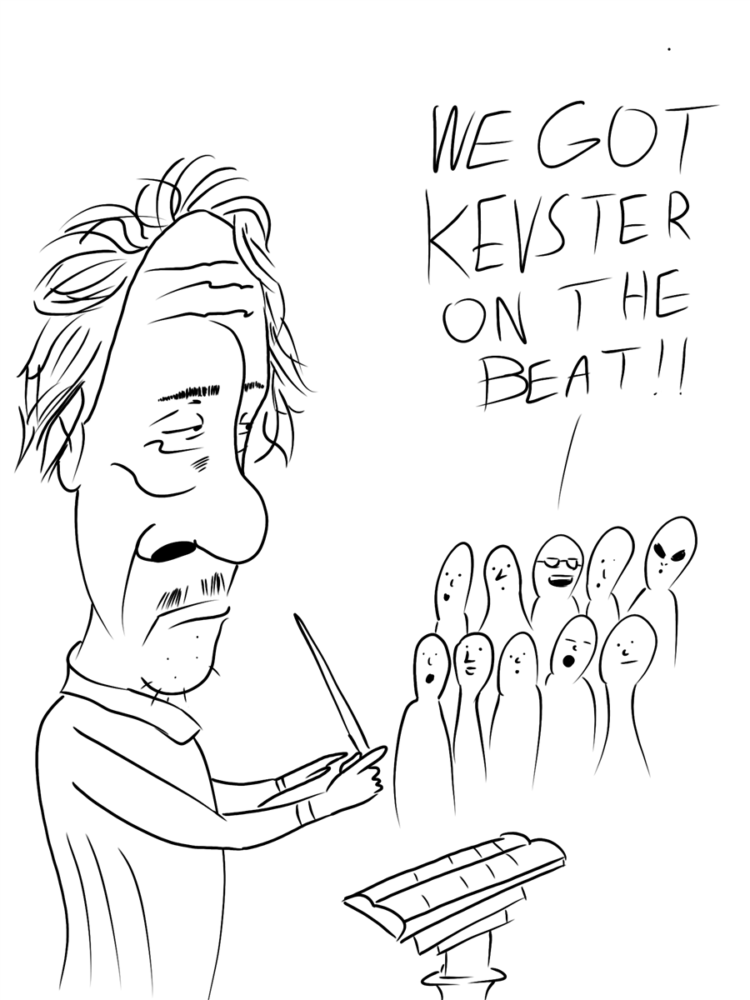

Senior year of high school, I decided to make a funny diss track for my Government teacher, Mrs. Errichiello. No, I did not hate her. She was one of the best. I'm pretty sure there's a clip somewhere out there of me begging her not to suspend me after I did the one chip challenge in her classroom. I also explained to her all my cheating exploits on tests so she could patch it. After that year, I heard she got a lot stricter on her students. Also, I might put her on my ops list since she ratted me out when I was cheating on some driving test.
- Chicken Connoisseur